|
| Отладочная платформа Arduino
|
|
|
|
|
Отладочная платформа Arduino Mega 2560 |
|
1.1. Общие сведения
Arduino Mega 2560 предназначена для практического овладения принципами построения
микроЭВМ, обучения программированию в машинных кодах, а также
для отладки программного обеспечения микроконтроллерных систем различного назначения.
Платформа имеет 54 цифровых входов/выходов, 16 аналоговых
входов, 4 последовательных порта UART, кварцевый генератор 16 МГц, разъёмы: USB,
питания, ICSP и кнопка перезагрузки. Для работы необходимо
подключить Arduino к компьютеру USB-кабелем или подать внешнее питание через
соответствующий разъём.
1.2. Краткие характеристики
Характеристики |
Arduino UNO |
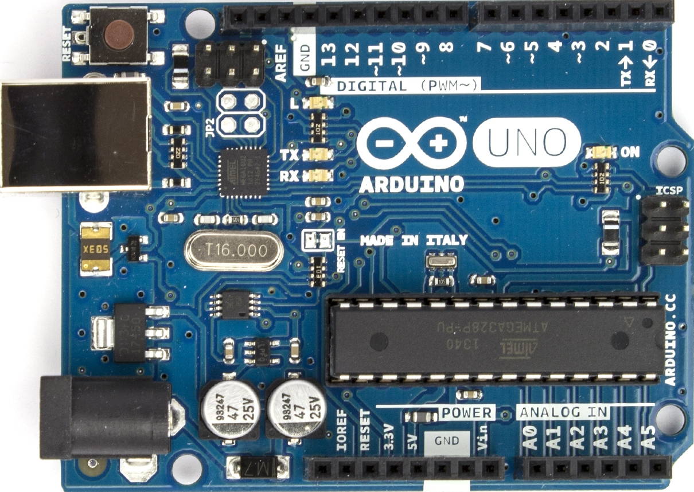 |
Arduino Mega |
 |
Arduino NANO |
 |
Микроконтроллер |
ATmega328p
|
ATmega2560 |
ATmega328p
|
Тактовая частота |
16 MHz |
Флеш-память программ |
32 KB |
256 KB |
32 KB |
Оперативная память данных |
2 KB |
8 KB |
2 KB |
Внешнее напряжение питания |
7..12 V |
Дискретные входы/выходы |
14 |
54 |
14 |
Постоянный ток через вход/выход |
40 mА |
Аналоговые входы |
6 |
16 |
8 |
Постоянный ток для вывода 3,3 В |
50 mА |
Энергонезависимая память |
1 KB |
4 KB |
1 KB |
Напряжение питания |
5 В |
Программа, подготовленная к загрузке представляет собой *.hex-файл, сгенерированный в
среде разработки AVRStudio из проекта на языке C или
Assembler. Она загружается в Arduino через интерфейс USB непосредственно из командной
строки. Простейшая программа на языке Assembler для
микроконтроллера ATmega328p выглядит следующим образом:
.include "m328pdef.inc"
init:
ldi r16,0b00000001
out DDRB,r16
main:
out PORTB, r16
rjmp main
|
.include – это директива, которая подключает к проекту файл соответствий
символических имён регистров их реальным адресам. Программа
из подключенного файла будет выполняться так, как если бы код был написан в текущем
файле. Доступ к регистрам ввода/вывода осуществляется по их
адресам, являющимися операндами команды. Вместе с тем при написании ассемблерных
программ гораздо удобнее обращаться к регистрам, используя вместо
числовых значений адресов их стандартные, принятые в фирменной документации,
символические имена. Такое решение облегчит перенос программного
обеспечения с одного типа МК на другой.
Эта программа, тем не менее, имеет структурированный вид благодаря двум основным блокам:
инициализации, и блока решения задачи
(main).
После компиляции команды преобразуются в коды, выполняемые вычислительным ядром
контроллера, а также присваиваются адреса расположения команд в
памяти программ. Полученный машинный код, сгенерированный компилятором можно увидеть в
процессе пошаговой отладки программы во вкладке View
→ Disassembly. В результате откроется окно со следующим содержимым:

В каждой ячейке памяти программ хранится по два байта, так как каждая AVR-команда состоит
из двух байт.
|
|
|
Среда разработки AVRStudio |
|
2.1. Работа со средой разработки AVRStudio
Для написания программ, их отладки и трансляции используется среда “AVRStudio”. Она
работает с проектами, аналогично тому, как это реализовано в
Microsoft Visual Studio. Проект содержит файлы программы и ориентирован на применяемый
микроконтроллер. Файл проекта *.aps содержит сведения о типе
процессора, частоте тактового генератора и т.д. Он также содержит описание всех
остальных файлов входящих в проект. Текст программы имеет расширение
asm. Проект может содержать несколько файлов такого типа, в данном случае один из них
будет главным, а другие должны подключаться в главном
посредством директивы .include.
Если программа не содержит критических ошибок и процесс трансляции прошел успешно, то в
директории проекта автоматически появляется файл с
результирующим кодом трансляции в hex-формате, готовым к загрузке в память программ МК,
и другие вспомогательные файлы.
2.2. Интерфейс AVRStudio
На рисунке представлен внешний вид AVRStudio.

Рис. 1. Отладочная среда AVRStudio.
В левой части имеется древовидный навигатор файлов проекта. Правее него находится окно
для редактирования файлов проекта. Ниже находится
вспомогательное окно “Build”, в котором отображаются результаты трансляции, сообщения об
ошибках и различные предупреждения (Warnings). В правом
окне “I/OView” показаны ресурсы МК:
- Регистры общего назначения;
- Порты ввода-вывода;
- Таймеры;
- Компараторы;
- АЦП и т.д.
2.3. Создание нового проекта
В меню Project → NewProject. В поле Projecttype необходимо выбирать тип будущего
проекта atmel AVR assembler. В Projectname вводим имя
проекта латинскими символами. Под полем находятся два checkbox'а. Create initialize file
определяет, нужно ли автоматически создавать
главный программный файл. Если такой файл уже есть, то снять галочку, а в созданном
проекте просто подключить готовый программный файл.
Create folder определяет, нужно ли автоматически создавать отдельный каталог для данного
проекта.
Ниже присутствует поле, содержащее имя файла. Без необходимости его лучше оставлять со
значением по умолчанию. Последним элементом данного окна
является Location, позволяющее указать путь к месту на жёстком диске, где будут
храниться файлы проекта.
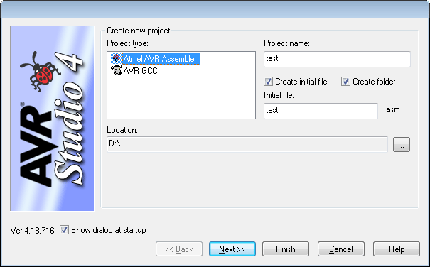
Рис. 2. Создание нового проекта
По кнопке Next, откроется следующее окно: Select debug device and platform (Выбор
отладочной платы и микроконтроллера). В списке отладочных
платформ необходимо выбрать AVRSimulator, а в списке устройств – ATmega328p. Теперь по
нажатию Finish будет создан проект в указанном каталоге.
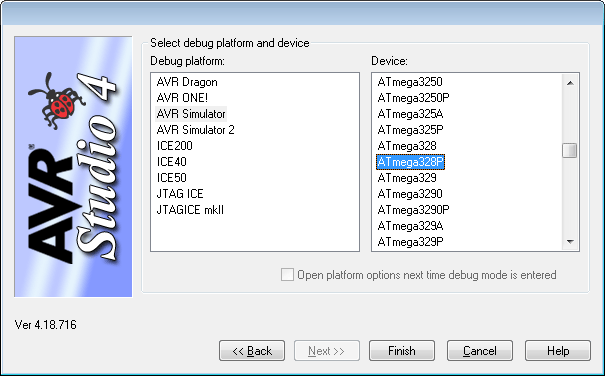
Рис. 3. Выбор отладочной платформы и микроконтроллера
2.4. Построение и отладка проекта
В открывшемся проекте необходимо подключить файл, содержащий в себе определения имен для
адресов регистров. В нашем случае первой строкой
программы будет: .include "m328pdef.inc". После написания кода в созданном проекте, его
необходимо транслировать. Эта операция выполнятся через меню
по вкладке Build, а в ней соответственно опции «Build» или «Build and Run» или нажать
соответствующие им комбинации горячих клавиш: F7 и Ctrl+F7.
Если в проекте отсутствуют синтаксические ошибки, то в окне построения Build появится
сообщение:
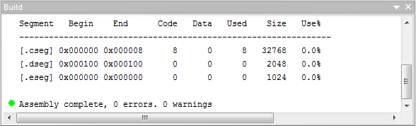
Рис. 4. Трансляция проекта
Проект также будет успешно транслирован, если в результате построения будут найдены
предупреждения (warnings). Однако в случае нахождения
серьёзных ошибок AVRStudio сообщит об этом в отчёте построения и прервёт компиляцию:
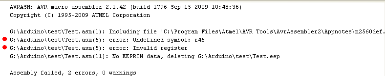
Рис. 5. Отчёт о результатах компиляции
В данном случае была обнаружена одна ошибка и ноль предупреждений. Информация о
месторасположении ошибки и её типе находится выше (в строке
отмеченной красной точкой). Если навести курсор на эту строку и дважды щелкнуть левой
кнопкой мыши (или нажать F4), то в тексте программы отметится
соответствующая строка.
В нахождении ошибок может помочь пошаговая отладка программы и наблюдение за изменением
содержимого регистров и ячеек памяти. Для этого
необходимо запустить программу в AVRStudio через вкладку Debug, где выбрать опцию Start
Debugging (Ctrl+Shift+alt+F5) либо запустить построение
проекта с последующим запуском – Build → Build and Run (Ctrl+F7):
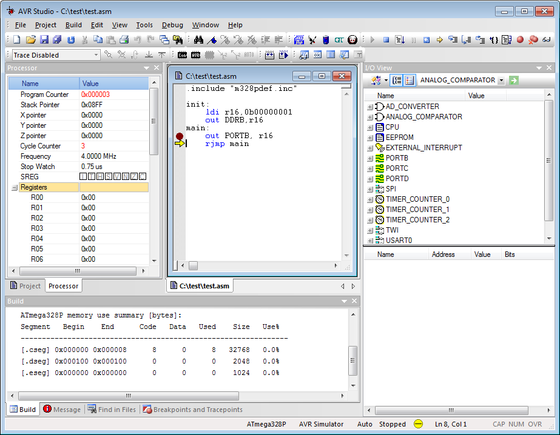
Рис. 6. Отладка программы
В рабочей области программы появилась новая форма Processor, а в редакторе кода жёлтая
стрелка, показывающая на строку кода, которой соответствует
состояние программного счётчика (PC) на данной итерации.
В окне Processor можно наблюдать за содержимым:
- PC;
- Stack Pointer (указатель стека);
- X, Y, Z (указатели на начало областей памяти предназначенных для сдвоенных регистров
R26-R27, R28-R29, R30-R31);
- Cycle Counter (счётчик тактов процессора);
- Frequency (тактовая частота процессора);
- Stop Watch (таймер отсчитывающий время с начала выполнения программы для заданной
частоты);
- SREG (регистр состояния);
- Registers (РОН).
Комбинацией клавиш alt+4 (либо во вкладке View → Memory) можно открыть окно:
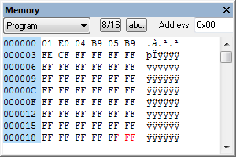
Рис. 7. Memory
В выпадающем списке можно выбирать просмотр различных областей памяти от ОЗУ до регистров
I/O. Правой кнопкой мыши вызывается контекстное меню
позволяющее изменять систему счисления, в которой отображаются данные, двухбайтное или
однобайтное представление и некоторые другие опции.
Переход к следующей команде осуществляется нажатием кнопки Step Over во вкладке Debug
либо горячей клавишей F10. Иногда бывают ситуации, в которых
необходимо, чтобы от начала программы прошло достаточно времени, например прерывание по
переполнению счётчика-таймера. В этом случае можно
воспользоваться автошагом (т.е. автоматическим переходом по строкам программы), для
этого необходимо во вкладке Debug включить auto Step (alt+F5).
Чтобы программа в режиме auto Step автоматически остановилась на паузу, необходимо
поставить breakpoint (точку прерывания), которая представляет
собой красную точку перед строкой с командой и устанавливается из вкладки Debug или с
помощью горячей клавиши F9.
|
|
|
Среда моделирования ISISProteus |
|
3.1. Работа со средой моделирования ISISProteus
ISIS Proteus представляет собой среду, позволяющую моделировать работу электронных
схем.
При запуске программы, будет предложено создать новый проект с помощью мастера. После
этого появится рабочая область Proteus, на которой можно
размещать компоненты. Готовые модели сохраняются в файлах с расширением pdsprj.
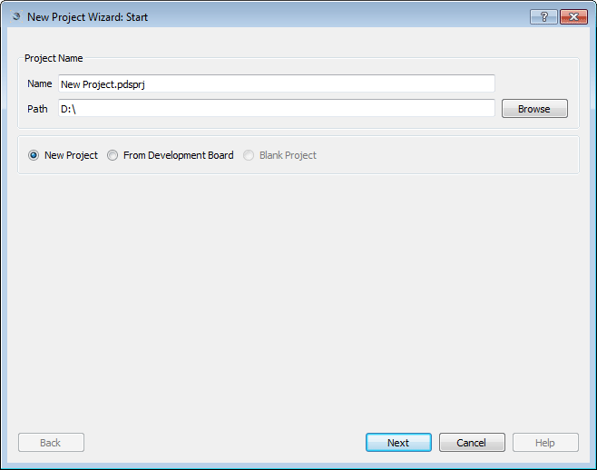
Рис. 8. Создание нового проекта ISISProteus
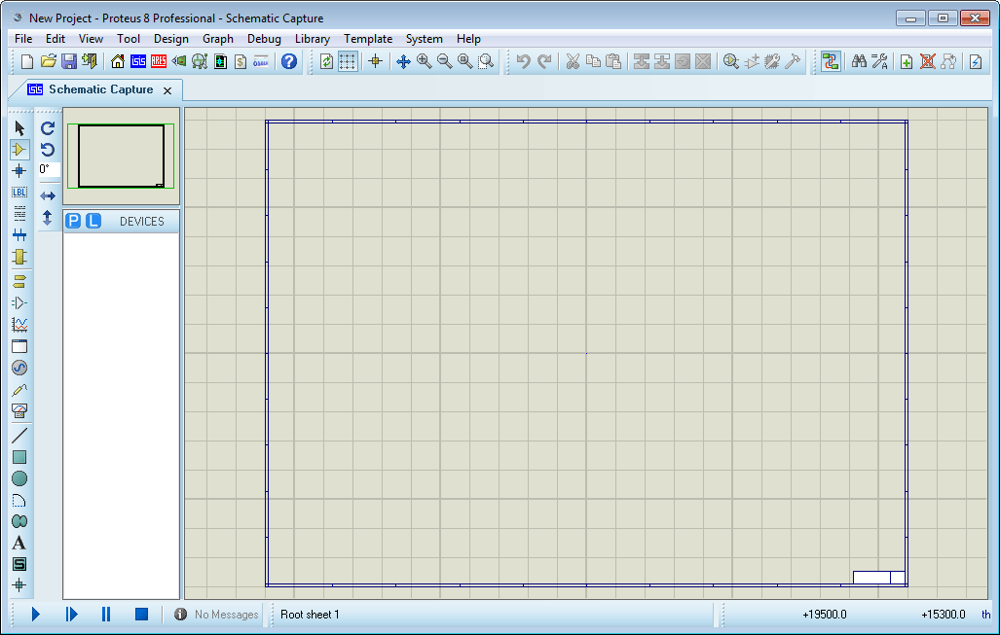
Рис. 9. Рабочая область ISISProteus
Для добавления нового компонента в рабочую область в меню необходимо выбрать library,
затем вкладку PickDevice/Symbol. Кроме того, можно
воспользоваться горячей клавишей P, либо нажать на соответствующий символ в левой части
экрана, который расположен на форме Device Selector
(Port Selector или Terminal Selector).
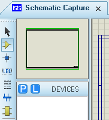
Рис. 10. Добавление нового компонента
В результате будет открыто окно Pick Devices, в котором можно выбрать желаемый
микроконтроллер либо любой другой электронный компонент:
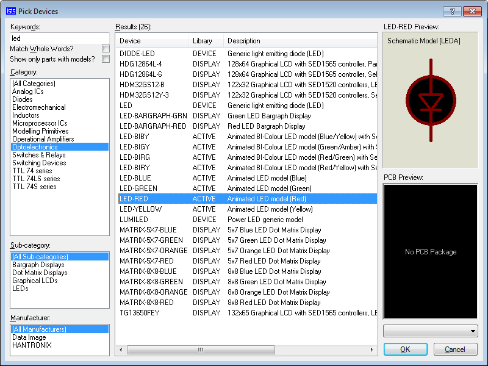
Рис. 11. Окно Pick Devices с областями Schematic preview и PCB preview
Выбор конкретного устройства сопровождается выводом графической информации в окнах
Schematic preview и PCB preview. По кнопке ОК, необходимо
указать точку расположения элемента. Подобным образом на рабочую область можно добавить
любые элементы. По кнопке ОК, необходимо указать точку
расположения элемента. Подобным образом на рабочую область можно добавить любые
элементы.
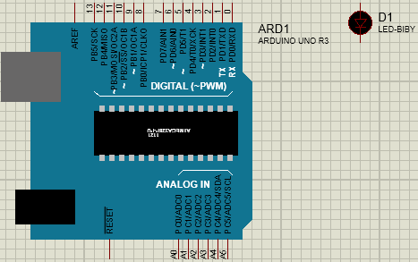
Рис. 12. Пример расположения элементов
Также для работоспособности схемы, может понадобиться добавить несколько специальных
компонентов: такие как элемент питания (POWER) и земля
(GROUND). Эти элементы можно выбрать в окне Terminal Selector нажав в левом углу экрана
кнопку Terminal Mode:
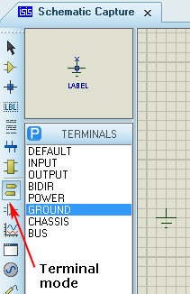
Рис. 13. Расположение кнопки Terminal Mode
Перейти обратно на вкладку Devices можно по кнопке Component Mode, расположенной на 5
кнопок выше Terminal Mode, либо горячей клавишей P.
Соединения между элементами осуществляется следующим образом:
- В качестве текущего режима должен быть выбран Selection Mode (первый элемент на
левой панели).
- При наведении на возможную линию связи курсор примет вид карандаша.
- Одним нажатием манипулятора (левая клавиша мыши) установить начало линии и отпустить
клавишу.
- Перевести курсор на конечную точку (элемент с которым необходимо провести
соединение) и повторить действие предыдущего пункта.
Редактирование уже расположенных компонентов (в той мере, в которой это возможно)
осуществляется из контекстного меню по правой кнопке мыши при
выбранном элементе.
На следующем этапе необходимо загрузить в микроконтроллер сгенерированный hex файл, что
является эквивалентом «прошивания» реального
микроконтроллера. Это делается в свойствах МК (двойной щелчок левой кнопкой мыши или
вызов контекстного меню правой кнопкой, с последующим выбором
вкладки Edit Properties):
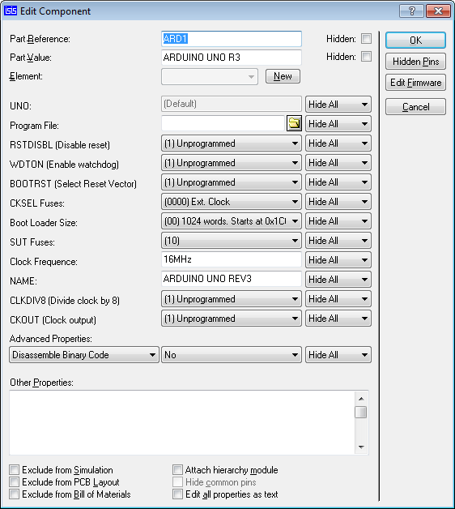
Рис. 14. Окно редактирования свойств Edit Properties
Значения большинства компонентов лучше оставить по умолчанию. После нажатия на кнопку в
виде папки в поле Program File, необходимо указать путь к hex
файлу. Дальнейшее усложнение схемы будет происходить в зависимости от задач, которые
необходимо реализовать. Простейшим примером будет подключение
светодиода к любому из выводов микроконтроллера, соответствующего произвольному порту
ввода-вывода, что даст индикацию значения соответствующего бита
находящегося в регистре PORTx, при условии того, что заданная линия текущего порта
находится в режиме вывода (OUT).
Для запуска, пошагового моделирования, паузы и остановки симуляции используются 4 кнопки
расположенные в левой нижней части экрана:
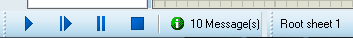
Рис. 15. Кнопки для запуска, пошагового моделирования, паузы и остановки
симуляции
При нажатии кнопки Play будет произведена симуляция. Если в ходе симуляции были
обнаружены ошибки, в журнале симуляции будут соответствующие
сообщения, в противном случае, появится сообщение об успешной симуляции:
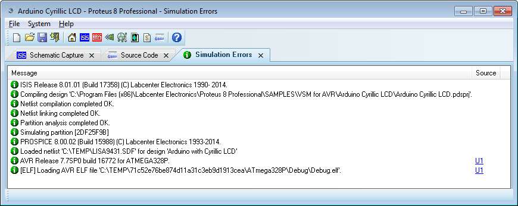
Рис. 16. Сообщение о симуляции
В качестве примера воспользуемся вышеприведённым ниже кодом, который заставляет светиться
светодиод, подключенный к 8 выводу Arduino UNO через
резистор на землю. Этот вывод соответствует нулевому биту регистра ввода/вывода PORTB
(PB0) микроконтроллера ATmega328p. Поэтому при выдаче на эту
линию порта логической единицы будет включен светодиод.
.include "m328pdef.inc"
init:
ldi r16,0b00000001
out DDRB,r16
main:
out PORTB, r16
rjmp main
|
Компиляция этого кода приведёт к созданию hex-файла, который необходимо загрузить в
виртуальный микроконтроллер системы Proteus.
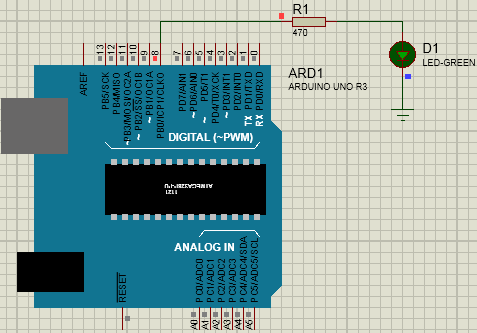
Рис. 17. Модель собранной схемы
При запуске симуляции можно наблюдать включение светодиода. Убедившись в
работоспособности программы в симуляторе её можно загружать в реальный
контроллер.
3.2. Загрузка программы в микроконтроллер
Hex-файл программы записывается в память МК через USART на плате Arduino. Соединение и
запись со стороны ПК организованно с помощью консольной
программы AVRdude (AVR Downloader-Uploader). Её необходимо вызывать через консоль
Windows (cmd) c передачей параметров, описывающих тип МК, скорость
передачи, номер COM-порта на ПК и т.д. Для использования программы необходимо поместить
в одном каталоге исполняемый файл AVRdude.exe и файл
конфигурации AVRdude.conf (можно расположить в разных директориях, что придётся учесть в
указании расположения файлов). Затем запустить из командной
строки AVRdude.exe с требуемыми параметрами:
«Путь к файлу»AVRdude -C«Путь к
файлу»AVRdude.conf -v -v -v -v
-pATmega2560 -cwiring -P\\.\COM«Номер порта» -b115200 -D
-Uflash:w:«Путь к файлу»\«Имя файла».hex:i
Параметры передаваемые AVRdude:
- -C – размещение файла конфигурации;
- -v – так называемый «многословный» (verbose) вывод – полезно для контроля и
отладки;
- -p – тип микроконтроллера для программирования;
- -P – коммуникационный порт, к которому подключён Arduino (в Windows его можно
посмотреть в диспетчере устройств);
- -b – скорость работы с последовательного порта;
- -D – отключение очистки МК перед прошивкой;
- -U :r|w|v:[:format]: выполнение прошивки, тип памяти МК – flash или EEPROM;
- r|w|v – флаги определяют необходимое действие:
r (read – считать);
w (write – записать);
v (verify – проверить);
- [:format] флаг формата данных (используем «Intel Hex»).
Пример для Arduino 2560:
С:\AVRdude –CC:\ AVRdude.conf -v -v -v -v -pATmega2560
-cwiring -P\\.\COM4 -b115200 -D -Uflash:w:C:\led.hex:i
Пример для Arduino UNO:
C:\AVRdude -CC:\AVRdude.conf -v -v -v -v -pATmega328p
-cArduino -P\\.\COM3 -b115200 -D -Uflash:w:C:\led.hex:i
Если Arduino подключён к ПК и в параметрах не было допущено ошибок, то hex файл
загрузится в МК.
| 

{kind=link}